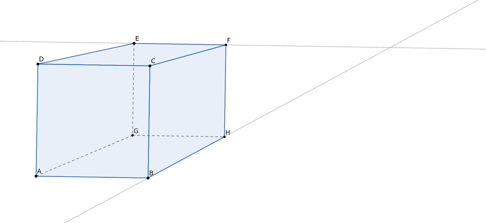

What does it mean for two lines to be parallel? Remembering that lines continue indefinitely, we defined two lines in the same plane to be parallel 1.2.12 if they never intersect. In this section, we will look more closely at this definition, explore properties related to parallel lines, and explore what lines look like in other geometries.
Subsection2.3.1Geometry on Another Surface
In school, we typically consider lines to lie on a flat surface called a plane. While most of this textbook will follow this tradition, we take a brief departure from planar geometry in this section. The world we live on is not flat; it is roughly spherical. What objects might act like lines on the surface of a sphere. Do spherical lines have the same properties as lines on a plane? One could also study the behavior of lines in our universe: Are they straight or do the bend? What can we say about parallel lines in these environments? Do our familiar properties hold?
Exploration2.3.1.Defining Lines on a Sphere.
For this activity and the one that follows, you will need a sphere, some rubber bands large enough to go around your sphere, a protractor, a marker, and a piece of thread. Possible “spheres” include styrophone balls, oranges, rubber softballs, or spheres sold by math education supply companies. Aim for a sphere around the size of a softball or larger. As an alternative, you may use a globe with latitude and longitude lines marked. This latter option requires some string or ribbon instead of rubber bands and markers.
(a)
In your own words, write three different endings to the statement, “A line is ...”. Compare your responses to that of your classmates.
(b)
Complete the following sentences:
The sum of the measures of the interior angles of any triangle is ...
Two lines in the plane are parallel if ...
(c)
We don’t live on a plane; we live on a sphere. Let’s predict what the lines on a sphere, on our earth, might be. The lines will lie on the surface of the sphere. The lines will not pass through the sphere nor will they project out into space. What are some examples of things that might pose as “lines” on a sphere? Which of your descriptions in Task 2.3.1.a do they satisfy?
(d)
You’ve probably heard the expression, “The shortest distance between two points lies along a line.” We shall use this property of line segment to determine which linear features on a sphere act as lines and line segments. Suppose you’re planning to fly from Chicago, Illinois (41.8781N, 87.6298W), to Rome, Italy (41.9028N,12.4964E). There are many paths you could take, many of which might qualify as lines under your suggestions above. Which of these gives the shortest distance from Chicago to Rome? If a globe is available, find Chicago and Rome and experiment with a string to find the path of least distance. If you do not have a globe, mark the approximate locations of Chicago and Rome on your sphere; each should be midway between the equator and the north pole, with Rome approximately a quarter of the way around east of Chicago. Tighten the string connecting these two cities to observe the path of shortest distance between them.
Describe this line segment. Does it follow a latitude line? Bend toward the north pole? Bend toward the equator?
Allow the “line” to extend “forever” beyond the two points. What figure does it form? How is this figure related to the sphere itself?
The lines on a sphere are simply the great circles of the spheres. A great circle is a circle on a sphere that has the same diameter as the sphere itself. If you were to cut a sphere along a great circle, you would split the circle into two hemispheres of the same size. Restrict yourself to this definition of line for the next exploration.
Exploration2.3.2.Properties of Spherical Lines and Triangles.
(a)
Which latitudes will be lines (great circles) on a sphere?
(b)
Which longitudes will be lines on a sphere according to this definition?
(c)
Choose any point not on the equator. Can you construct a line through this point that is parallel to the equator? Explain.
(d)
What do you expect to be true about the sum of the interior triangles of your spherical triangle? Plot three noncollinear points on your sphere and connect them with spherical line segments (rubber bands).
(e)
To measure the angles on a sphere, pass a piece of thread through the vertex hole of a protractor and tie it securely. Hold the protractor with that hole at the vertex of the angle you wish to measure, aligning the baseline of the protractor with one side of the angle. By pulling the thread tight and visually aligning it with the second side of the angle, you should be able to read the measure on the protractor. Record the measurements of each of the three angles of your triangle and then add the three measures.
Angle A:
Angle B:
Angle C:
Sum:
(f)
Repeat the last tasks two more times so that you have found the sum of the measures of the angles for three different triangles. Record your measurements and sums. What do you notice?
You get to define “largest” here and your definition may differ from that of other classmates. Hence, your results may also differ!
(h)
Make a conjecture as to the sum of the measures of the interior angles of a spherical triangle. Test your conjecture with additional triangles.
Subsection2.3.2Understanding Parallel Lines
The two explorations, Exploration 2.3.1 and Exploration 2.3.2 led to some observations that might have surprised you. One of the ways in which spherical geometry differs from Euclidean geometry is that no lines on the sphere are parallel. Of course, we could have defined line differently, but that would have led to a loss of other properties of lines, such as the existence and uniqueness of a line joining any pair of points. Hence, we need to be clear regarding the geometry we are working with. Except where specified, our study will be limited to Euclidean geometry where lines lie on planes, not spheres. In Euclidean geometry, parallel lines do exist; in fact, for each point and line not passing through that point, we can always draw exactly one line that is parallel to the given line and passes through the given point. We will accept this statement, known as Playfair’s Parallel Postulate, as one of our principles.
Principle2.3.1.Playfair’s Parallel Postulate.
Given a line \(\ell\) and a point \(P\) not on \(\ell\text{,}\) there is one and only one line passing through \(P\) and parallel to \(\ell\text{.}\)
In order to be parallel, two lines must lie in the same plane. If you are reading this indoors, you probably have a wall in front of you and a wall somewhere to your right. The line where the ceiling meets the wall in front of you will never intersect the line formed by the intersection of the floor and the wall to your right. Still, we do not consider these two lines to be parallel because there is no plane containing both lines. Instead, we say that these are skew lines.

Figure2.3.2.Illustrating skew lines as edges on a rectangular room.
Refer to Figure 2.3.2 as you answer the following.
In the figure, it looks like \(overleftrightarrow{BH}\) and \(overleftrightarrow{EF}\) should intersect. Explain why they do not intersect when we think of the figure as a three-dimensional rectangular box or room.
Identify a second line (extension of an edge of the box in the picture) that would be considered to be skew to \(overleftrightarrow{BH}\text{.}\)
How many lines suggested by edges of this box are parallel to \(overleftrightarrow{BH}\text{?}\) Name them.
We also observed that angle measures in spherical triangles did not behave in the way that Euclidean triangles do. This suggests that the measures of angles may be related to the parallel postulate. Indeed the two concepts are closely connected. In section Subsection 2.2.2, we rotated a triangle 180 degrees about a midpoint of one of its sides and again around the midpoint of a second side and noticed that copies of the three angles formed a line when placed side by side at a vertex. We now look at that exploration in the context of parallelism.
Exploration2.3.3.Alternate Interior Angles.
(a)
In the following application, triangle \(\Delta ABC\) has been rotated 180 degrees about midpoint \(D\) of side \(BC\) to form \(\Delta A'C'B'\text{.}\) Note that point \(B'\) coincides with \(C\) and point \(C'\) coincides with \(B\text{.}\)
Figure2.3.4.An interactive Geogebra applet for Exploration on Alternate Interior Angles.
What appears to be true about lines \(\overleftrightarrow{AB}\) and \(\overleftrightarrow{CA'}\text{?}\)
What other two lines appear to have this property?
Verify your observation by using the parallel line tool in the app. After selecting parallel lines from the line tool menu, click on the line segment it should be parallel to and then click on the point it should pass through.
(b)
What can we say about the relationship between angles \(\angle A'CB\) and \(\angle ABC\)
In terms of angle measure? How do you know?
In terms of their relationship to the parallel lines, \(\overleftrightarrow{CA'}\) and \(\overleftrightarrow{AB}\) and the line \(\overleftrightarrow{BC}\text{?}\)
In terms of triangle \(\Delta ABC\) and its copy \(\Delta AC'B'\text{?}\)
When a line cuts across two other lines, we call it a transversal of the lines. When a transversal \(\overleftrightarrow{BC}\) cuts across two parallel lines \(\overleftrightarrow{AB}\) and \(\overleftrightarrow{CD}\) so that points \(A\) and \(D\) are on opposite sides of \(\overleftrightarrow{BC}\text{,}\) angles \(\angle{ABC}\) and \(\angle DCB\) are said to be alternate interior angles. We will not give a proof, the following two statements are equivalent to Playfair’s Parallel Postulate. They hold in Euclidean geometry where Playfair’s Parallel Postulate is assumed, but fail in non-Euclidean geometries like Spherical Geometry in Exploration 2.3.1 and Exploration 2.3.2.
Principle2.3.5.
Given two parallel lines \(m\) and \(n\) and a line \(t\) that crosses \(m\) and \(n\text{,}\) corresponding angles have the same angle measure.
Principle2.3.6.
The sum of the interior angles of any triangle is 180 degrees.